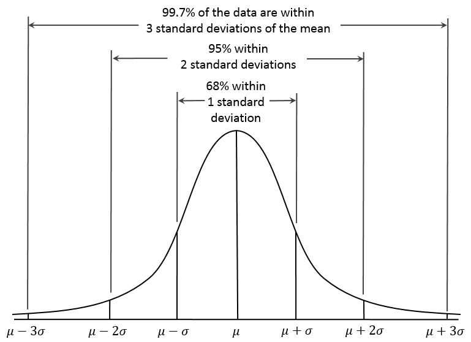

Studying Human Performance - Statistics
COURSE
Basics
Data types
There are three types of data to consider when doing statistics:
- Categorical: data classed into categories,
- Ordinal: data that can only be classed by order,
- Ratio/Interval: data that can be put on a scale where the relationship between each point is known.
Measures of central tendency
There are three measures of central tendency to take into account: mean, median and mode.
The mean is the average of all numbers and is sometimes called the arithmetic mean, and is generally best for interval data. In a sample with \(n\) elements such as \(x_1, x_2,..., x_n\), the mean noted \(\bar{x}\) is the sum of all the values divided by the numbers of items: \[\bar{x} = \frac{1}{n} \cdot \sum_{i=1}^{n} x_i\]
The median is the value separating the higher half from the lower half of a data sample, commonly thought of as the "middle" value. Finding the median in a sample only requires the sample to be ranked (sorted, ordered). The median is best to use with ordinal data. The basic advantage of the median compared to the mean is that it is not skewed so much by extremely large or small values, and so it may give a better idea of a "typical" value.
The mode of a set of values is the value that appears most often, the most common entry, best measure for categorical data.
Normal distribution
Definition
The normal distribution (also called Gaussian or the bell curve), is a very common continuous probability distribution. Normal distributions are very important in statistics and are often used to represent real-valued random variables whose distributions are not known. The normal distribution is useful because of the central limit theorem stating that averages of samples converge in distribution to the normal, that is, they become normally distributed when the number of observations is sufficiently large.
In simpler words, when observing data from large samples, in many cases, the data tends to be around a central value with no bias left or right. This distribution is found in many naturally occurring phenomena such as heights of people, size of objects produced by machines, errors in measurements, blood pressure, marks on a test and many more. The properties of a normal distribution allow to easiliy manipulate variables and compute significant results.
A normally distributed sample is a sample with equal measures of central tendecy, that is when \(mean = median = mode\). When this is not the case, the data sample is said to be skewed. A sample can be negatively skewed (\(mean < median < mode\)) or positively skewed (\(mean > median > mode\)). It is not appropriate to perform various statistical tests on a skewed sample. When the sample is normally distributed with a perfect symetry, exactly 50% of the values are lower than the mean, and exactly 50% are higher.
A normal distribution is noted \(\mathcal{N}(\mu, \sigma)\) with \(\mu\) the mean, \(\sigma\) the standard deviation and \(\sigma^2\) the variance.
Standard deviation
The standard deviation, note \(\sigma\), is a measure defining how spread out the numbers of a sample are. A low standard deviation indicates that the data points tend to be close to the mean, while a high standard deviation indicates that the data points are spread out over wider range of values. This measure is the square root of the variance. But what is the variance?
The variance is defined as the squared differences from the mean. Informally, the variance measures how far a set of numbers are spread out from their average value. For a sample with \(n\) values, it is calculated with the following formula: \[\sigma^2 = \frac{\sum_{i=1}^{n} (x_i - \mu)^2}{n-1}\]
The standard deviation is therefore calculated with: \[\sigma = \sqrt{\frac{\sum_{i=1}^{n} (x_i - \mu)^2}{n-1}}\]
Once the mean and the standard deviation are known, a perfect description of the distribution is given. Generally we find that:

Standard scores
The standard deviation is a useful tool to generally examine a sample and contextualize values in 1 to 3 standard deviation units from the mean. However, how to know how many standard deviations a specific value is from the mean?
To convert a value to a standard deviation value (also called a standard score or z-score):
- Substract the mean to the value (how far from the mean?),
- Divided by the standard deviation (how many standard deviations?).
Hence for a value \(x\), the z-score \(z\) is: \[z = \frac{x - \mu}{\sigma}\]
Doing that operation is called standardizing, or converting a normal distribution into a standard normal distribution. Usually, the entire sample is standardized at once to simplify the calculations by simply looking up standardized pre-computed tables. The table D. Normal distribution table allows to convert from standard scores to percents, and vice versa.
Statistical tests
When doing an experiment, choosing the correct statistical test is very important to obtain significant results. The first step in doing so is to understand every factor affecting the choice, and how to implement study design.
Experiment outline
An experiment, (or study or research), can be outlined by the following steps:
- Research question: objective, aim, question asked,
- Study design: describing the experiment through hypothesis, variables, data types and participants,
- Conducting the experiment: doing the described experiment and collecting data,
- Test selection: choosing the correct test(s) based on the study design,
- Doing the test: using the data to obtain results through the selected test(s),
- Interpretation and conclusion: making sense of the result and concluding on the research question.
Study design
Defining the problem, aim and hypotheses
The first step in designing a study is to clearly define the problem and issues that require investigation, and what will be achived by doing it. This is usually represented by a system of hypotheses, or statements of the predicted outcome. As studies manipulate variables and data, the aim of these hypotheses is to predict, understand and validate the relationships between said variables. Conventionally, there are two types of hypothesis:
- Experimental, or H1, that predicts a dependent relationship between variables,
- Null, or H0, that states that variables are not dependent (one does not impact the other).
Identify the research variables
The said variables are split in three categories:
- Independant variables (IV): variables manipulated by the experimented, related to the individual, task, system or environment,
- Dependant variables (DV): variables being measured in the experiment, not under the control of the experimenter, possibly affected by the IVs,
- Controlled variables: variables that need to be kept constant during the experiment.
Allocate participants to the experimental conditions
There are two ways to allocate and distribute the participants across the IVs:
- Within: every participant completes every experimental condition,
- Between: different participants are allocated to each experimental condition.
Assumptions and planned comparissons
The experimental hypothesis predicts a dependant relationship between variables, or in other words, independant variables impacting dependant variables. When a significant interaction is found, it is called a main effect. A study design can however further predictions by using assumptions, planned comparisons and post hocs.
A one-tailed hypothesis predicts how and in which direction an independant variable impacts a dependant variable. For example, if an experimental hypothesis predicts that music (IV) impacts performance (DV), a one-tailed extension would add that music improves performance, or that music impairs performance. One-tailed tests must be justified: it is for example justified to predict that constant loud noise impairs performance.
In addition, planned comparisons and post hoc are other comparisons that can be integrated to a study design. Unlike one-tailed assumptions that predict in which direction an independant variable affects a dependant variable, these computations compare the levels of an independant variable. For example, if an experimental hypothesis predicts that music (IV) impacts performance (DV), and that this independant variable has three levels (classical, rock, rap), contrasts could be that classical music affects performance differently than rap music. These potential interactions are called simple effects.
These comparisons can be done in two ways:
- Contrasts: they are planned comparisons, with hypotheses in mind, a guess in which direction the comparisons will result. They are specifically planned before the tests,
- Post hoc: if no specific prediction is made, these comparisons are made after the test, comparing everything to possibly detect significant differences.
Data types and analysis
Based on the data types and the variables, a test can either be parametric or non-parametric.
A parametric test is a test that is carried out with the assumption that the data collected follows a well-known distribution (usually the normal distribution), which can be boiled down to the knowledge of just a couple of parameters. A parametric test provides generalisations for making statements about the mean of the parent population. Because parametric test are based on a distribution, the measurement of variables on interval or ratio level, with the mean used as the measure of central tendency.
On the other hand, a non-parametric test has no known information about the population and is not based on any known distribution. Because non-parametric tests don't require assumptions about the nature of their distributions, they are also called distribution-free. These tests hence assume that the variables are measured on a nominal (categorical) or ordinal level, with the median as the measure of central tendency.
Significance
Statistical tests try to answer a question, based on the available data. When rejecting a null hypothesis (observing that there is indeed a relation between variables), there is a probability that this rejection is due to chance, that the random variables happen to misrepresent the reality. This probability, called p-value, represents the chance to reject a null hypothesis when it is actually true. Subsequently, the lower the p-value, the more meaningful the result because it is less likely to be caused by noise. A statistically significant result is one in which we believe the result was as a result of the experimental manipulation rather than chance alone.
The action to reject the null hypothesis when it is actually true is called an incorrect conclusion and more precisely a Type I error. It is an experimental error that analysts wants to avoid in priority, to not make any false claim. To that end, before conducting the test, a significance threshold called \(\alpha\) is set, that if exceeded, indicates a non-significant result. That threshold is usually \(\alpha = 0.05\), but particular contexts and fields of study often require a more strict value, such as \(\alpha = 0.001\).
Of course, the opposite action of failing to reject a null hypothesis when it is actually false is another experimental error called Type II error, but is often seen as less serious than the Type I error. The chance to make a Type II error is represented by the probability called \(\beta\). The statistical power is the probability of correctly rejecting the null hypothesis, when it is indeed false. \(geq 0.8\).
Statistical power
Statistical power is the probability of correctly rejecting a false null hypothesis. Statistical power is inversely related to \(\beta\) or the probability of making a Type II error. In short, \(power = 1 - β\). In simpler words, statistical power is the likelihood that a study will detect an effect when there is an effect there to be detected. If statistical power is high, the probability of making a Type II error, or concluding there is no effect when, in fact, there is one, goes down. As a rule of thumb, ideal statistical power is assumed when .
Statistical power power nearly always depends on the following three factors:
- the statistical significance criterion used in the test: usually named \(\alpha\) and set at 0.05, this criterion represent the likelihood to reject a null hypothesis when it is actually true,
- the magnitude of the effect: the effect size, is a quantitative measure of the magnitude of a phenomenon. Examples of effect sizes are the correlation between two variables, the regression coefficient in a regression, the mean difference, etc. In simple words, while the significance provides the knowledge of the presence of a phenomenon, the effect size describes how much is that phenomenon occuring,
- the sample size: it determines the amount of sampling error inherent in a test result. The statistical power is therefore often used to determine the ideal sample size (larger effect and sample sizes improve power).
In addition, the type of test can play a part in the power, as parametric tests are generally more powerful than non-parametrics ones.
Correlation, regression
Most tests aim to know if an independant variable has an impact on a dependant variable, but doesn't describe how. The study of correlation aims to measure the association or the absence of relationship between two variables, without taking into account if they are independant or dependant. Regression analysis on the other hand predicts the value of a dependant variable based on the known value of an independant variable.
Correlation is represented by a coefficient \(r\). This coefficient can vary from \(-1\) to \(+1\). A \(-1\) indicates a perfect negative correlation, while a \(+1\) indicates a perfect positive correlation. A correlation of \(0\) means there is no relationship between the two variables. When there is a negative correlation between two variables, as the value of one variable increases, the value of the other variable decreases, and vise versa. In other words, for a negative correlation, the variables work opposite each other. When there is a positive correlation between two variables, as the value of one variable increases, the value of the other variable also increases, the variables move together.
A rule of thumb to interpret \(r\) is:
- \(+-1\): perfect relationship,
- \(+-0.7\): strong relationship,
- \(+-0.5\): moderate relationship,
- \(+-0.3\): weak relation ship,
- \(0\): no relationship.
While \(r\) represents the strength of the linear relationship between two variables, \(r^2\) is generally better to report correlation in ergonomics. Known as the coefficient of determination, \(r^2\) represents the proportion of variance of one variable that is predicted from another variable (e.g. 80% of variation in Y can be explained by its relationship with X, while 20% remain unexplained).
The coefficient \(r\) can be calculated with:
- Spearman test (non-parametric),
- Pearson test (parametric).
In simple linear regression, we predict scores of one variable from the scores of a second variable. The variable we are predicting is called the criterion variable and is referred to as \(Y\). The variable we are basing our predictions on is called the predictor variable and is referred to as \(X\). When there is only one predictor variable, the prediction method is called simple regression. In simple linear regression, the predictions of Y when plotted as a function of X form a straight line. Linear regression consists of finding the best-fitting straight line through the points, called a regression line.
Causality
It is very important to understand that correlation does not imply causation. When two variables are found to be correlated, it is tempting to assume that this shows that one variable causes the other. It is however not the case, and this assumption is considered a questionable cause logical fallacy.
For any two correlated variables \(A\) and \(B\), the different possible relationships include:
- \(A\) causes \(B\) (direct causation),
- \(B\) causes \(A\) (reverse causation),
- \(A\) and \(B\) are consequences of a common cause, but do not cause each other,
- \(A\) and \(B\) both cause \(C\), which is explicitely of implicitely conditioned on,
- \(A\) causes \(B\) and \(B\) causes \(A\) (bidirectional or cyclic causation),
- \(A\) causes \(C\) which causes \(B\) (indirect causation),
- There is no connection between \(A\) and \(B\), the correlation is a coincidence.
Thus there can be no conclusion made regarding the existence of a cause-and-effect relationship only from the fact that A and B are correlated. Determining whether there is an actual cause-and-effect relationship requires further investigation, even when the relationship between A and B is statistically significant, a large effect size is observed, or a large part of the variance is explained.
Non-parametric tests
Wilcoxon
One IV, Two Levels, Within
A set of \(N = 12\) subjects are asked to rate two designs of screwdriver handle for ease of use on a seven point ordinal scale (7 = easiest, 1 = most difficult) and the data obtained are shown in the table below:
| Subject | Handle A (\(X_1\)) | Handle B (\(X_2\)) |
|---|---|---|
| S1 | 6 | 3 |
| S2 | 5 | 6 |
| S3 | 7 | 4 |
| S4 | 4 | 4 |
| S5 | 6 | 5 |
| S6 | 4 | 1 |
| S7 | 3 | 5 |
| S8 | 5 | 2 |
| S9 | 7 | 2 |
| S10 | 5 | 2 |
| S11 | 6 | 2 |
| S12 | 6 | 4 |
First start by calculating the differences between each pair of scores:
| Subject | Handle A (\(X_1\)) | Handle B (\(X_2\)) | \(X_1\) - \(X_2\) |
|---|---|---|---|
| S1 | 6 | 3 | 3 |
| S2 | 5 | 6 | -1 |
| S3 | 7 | 4 | 3 |
| S4 | 4 | 4 | 0 |
| S5 | 6 | 5 | 1 |
| S6 | 4 | 1 | 3 |
| S7 | 3 | 5 | -2 |
| S8 | 5 | 2 | 3 |
| S9 | 7 | 2 | 5 |
| S10 | 5 | 2 | 3 |
| S11 | 6 | 2 | 4 |
| S12 | 6 | 4 | 2 |
The next step is to ignore null differences (such as for S4), and hence decrease to \(N = 11\) subjects. The differences must then be ranked in order of magnitude (take mean for similar differences) in \([1, N]\), as follows:
| Order | 1 | 2 | 3 | 4 | 5 | 6 | 7 | 8 | 9 | 10 | 11 |
|---|---|---|---|---|---|---|---|---|---|---|---|
| Difference | 1 | 1 | 2 | 2 | 3 | 3 | 3 | 3 | 3 | 4 | 5 |
| Rank | 1.5 | 3.5 | 7 | 10 | 11 | ||||||
Then, assign in the previous table the rank to each difference, conserving their sign:
| Subject | Handle A (\(X_1\)) | Handle B (\(X_2\)) | \(X_1\) - \(X_2\) | Rank |
|---|---|---|---|---|
| S1 | 6 | 3 | 3 | 7 (+) |
| S2 | 5 | 6 | -1 | 1.5 (-) |
| S3 | 7 | 4 | 3 | 7 (+) |
| S4 | 4 | 4 | 0 |
|
| S5 | 6 | 5 | 1 | 1.5 (+) |
| S6 | 4 | 1 | 3 | 7 (+) |
| S7 | 3 | 5 | -2 | 3.5 (-) |
| S8 | 5 | 2 | 3 | 7 (+) |
| S9 | 7 | 2 | 5 | 11 (+) |
| S10 | 5 | 2 | 3 | 7(+) |
| S11 | 6 | 2 | 4 | 10 (+) |
| S12 | 6 | 4 | 2 | 3.5 (+) |
Calculate the total of negative ranks \(T_n\) and the total of positive ranks \(T_p\):
- \(T_n = 5\)
- \(T_p = 61\)
Finally, select from these two totals the lowest one, that is the value \(W_{obs}\). In this example \(min(T_n, T_p) = 5\), therefore \(W_{obs} = 5\).
In the table A, search for \(N = 11\), with a level of significance for a two-tailed test of \(\alpha = 0.05\), that value is \(W_{crit} = 11\).
Because \(W_{obs} < W_{crit}\), the null hypothesis is rejected (there is a difference of ease of use between the two designs of handles).
Mann-Whitney
One IV, Two Levels, Between
Two groups of 7 subjects (total of \(N = 14\)) are asked to complete a maintenance task using either a paper based manual for instructions or a head mounted display on a “private eye”. After the task they rate how easy they found several aspects of the task, giving an overall usability rating of between 4 and 20 (20 = easiest to use, 4 = most difficult).
| Subject | Paper based | Subect | Private eye |
|---|---|---|---|
| S1 | 8 | S8 | 11 |
| S2 | 10 | S9 | 15 |
| S3 | 6 | S10 | 18 |
| S4 | 15 | S11 | 14 |
| S5 | 14 | S12 | 16 |
| S6 | 9 | S13 | 12 |
| S7 | 10 | S14 | 9 |
First rank the scores by order of magnitude (take mean for similar differences) in \([1, N]\) as follows:
| Order | 1 | 2 | 3 | 4 | 5 | 6 | 7 | 8 | 9 | 10 | 11 | 12 | 13 | 14 |
|---|---|---|---|---|---|---|---|---|---|---|---|---|---|---|
| Score | 6 | 8 | 9 | 9 | 10 | 10 | 11 | 12 | 14 | 14 | 15 | 15 | 16 | 18 |
| Rank | 1 | 2 | 3.5 | 5.5 | 7 | 8 | 9.5 | 11.5 | 13 | 14 | ||||
Assign the rank to each score in the previous table and compute the totals:
| Subject | Paper based | Rank | Subect | Private eye | Rank |
|---|---|---|---|---|---|
| S1 | 8 | 2 | S8 | 11 | 7 |
| S2 | 10 | 5.5 | S9 | 15 | 11.5 |
| S3 | 6 | 1 | S10 | 18 | 14 |
| S4 | 15 | 11.5 | S11 | 14 | 9.5 |
| S5 | 14 | 9.5 | S12 | 16 | 13 |
| S6 | 9 | 3.5 | S13 | 12 | 8 |
| S7 | 10 | 5.5 | S14 | 9 | 3.5 |
| TOTAL | 38.5 | 66.5 |
The total rank for paper based is \(T_{pb} = 38.5\), and the total rank for private eye is \(T_{pe} = 66.5\).
Select from the two rank totals the highest one and assign to the variable \(T_x\). \[T_x = max(T_{pb}, T_{pe}) = 66.5\]
Using the following formulate, calculate the value of \(U_{obs}\):
\[U_{obs} = n_1 \cdot n_2 + \frac{n_x \cdot (n_x + 1)}{2} - T_x\]
where:
- \(n_1\) is the number of subjects in the group 1 (here \(n_1 = 7\)),
- \(n_2\) is the number of subjects in the group 2 (here \(n_2 = 7\)),
- \(n_x\) is the number of subjects in the group with the the highest rank total (here \(n_x = 7\)).
Therefore:
\[U_{obs} = 7 \cdot 7 + \frac{7 \cdot (7 + 1)}{2} - 66.5 = 10.5\]
In the table B, search for \(n_1 = n_2 = 7\), with a level of significance for a two-tailed test of \(\alpha = 0.05\), that value is \(U_{crit} = 8\).
Because \(U_{obs} > U_{crit}\), we fail to reject the null hypothesis (it can't be said that there is a difference between the two conditions).
Friedman
One IV, Three+ levels, Within
A group of \(n = 6\) students are asked to use three different types of computer interface one which is solely command line based, one which uses a combination of command line and pull down menus, and one which only uses pull down menus. They are then asked to rate the usability of these interfaces on a five point scale (5 = most usable). The following scores are obtained:
| Subject | Cmd line | Combination | Menus |
|---|---|---|---|
| S1 | 2 | 4 | 2 |
| S2 | 1 | 5 | 3 |
| S3 | 3 | 5 | 2 |
| S4 | 2 | 3 | 3 |
| S5 | 2 | 4 | 3 |
| S6 | 1 | 3 | 4 |
For each separate subect, rank the three scores by order of magnitude as follows for Subject 1 (S1):
| Order | 1 | 2 | 3 |
|---|---|---|---|
| Score | 2 | 2 | 4 |
| Rank | 1.5 | 3 | |
Assign the ranks to every score in the previous table and compute the rank totals:
| Cmd line | Combination | Menus | ||||
|---|---|---|---|---|---|---|
| Subject | Score | Rank | Score | Rank | Score | Rank |
| S1 | 2 | 1.5 | 4 | 3 | 2 | 1.5 |
| S2 | 1 | 1 | 5 | 3 | 3 | 2 |
| S3 | 3 | 2 | 5 | 3 | 2 | 1 |
| S4 | 2 | 1 | 3 | 2.5 | 3 | 2.5 |
| S5 | 2 | 1 | 4 | 3 | 3 | 2 |
| S6 | 1 | 1 | 3 | 2 | 4 | 3 |
| Total | 7.5 | 16.5 | 12 |
We note the rank totals for each condition \(T_{c1} = 7.5\), \(T_{c2} = 16.5\), \(T_{c3} = 12\).
The next step is to calculate the value \(Xr^2_{obs}\) with the following formula: \[Xr^2_{obs} = \bigg[ \frac{12}{N \cdot C \cdot (C + 1)} \cdot \sum T_c^2 \bigg] - 3 \cdot N \cdot (C + 1)\]
where:
- \(N\) is the number of subjects (here \(N = 6\)),
- \(C\) is the number of levels (here \(C = 3\)),
- \(\sum T_c^2\) is the sum of the square rank totals for each condition.
Therefore:
\[\sum T_c^2 = T_{c1}^2 + T_{c2}^2 + T_{c3}^2 = 7.5^2 + 16.5^2 + 12^2 = 472.5\] \[Xr^2_{obs} = \bigg[ \frac{12}{6 \cdot 3 \cdot (3 + 1)} \cdot 472.5 \bigg] - 3 \cdot 6 \cdot (3 + 1) = 6.75\]
In the table C, search for \(N = 6\) and \(C = 3\), that value is \(Xr^2_{crit} = 6.33\).
Because \(Xr^2_{obs} > Xr^2_{crit}\), we can reject the null hypothesis (there is a difference between the three conditions).
Kruskal-Wallis
One IV, Three+ levels, Between
Three groups of seven subjects (total of \(N = 21\)) were asked to rate any discomfort they experienced after typing on a keyboard for 20 minutes. The keyboards were set up so that they required three different levels of force to be exerted onto the keys. Therefore the three conditions were low force, medium force and high force. The subjects rated their discomfort on a 9 point scale, where a high score indicated a greater degree of discomfort.
| Subject | Low force | Subect | Medium force | Subject | High force |
|---|---|---|---|---|---|
| S1 | 4 | S8 | 5 | S15 | 6 |
| S2 | 3 | S9 | 4 | S16 | 8 |
| S3 | 1 | S10 | 2 | S17 | 9 |
| S4 | 2 | S11 | 5 | S18 | 7 |
| S5 | 2 | S12 | 4 | S19 | 9 |
| S6 | 3 | S13 | 3 | S20 | 9 |
| S7 | 1 | S14 | 6 | S21 | 8 |
First rank the scores by order of magnitude (take mean for similar differences) in \([1, N]\) as follows:
| Order | 1 | 2 | 3 | 4 | 5 | 6 | 7 | 8 | 9 | 10 | 11 | 12 | 13 | 14 | 15 | 16 | 17 | 18 | 19 | 20 | 21 |
|---|---|---|---|---|---|---|---|---|---|---|---|---|---|---|---|---|---|---|---|---|---|
| Score | 1 | 1 | 2 | 2 | 2 | 3 | 3 | 3 | 4 | 4 | 4 | 5 | 5 | 6 | 6 | 7 | 8 | 8 | 9 | 9 | 9 |
| Rank | 1.5 | 4 | 7 | 10 | 12.5 | 14.5 | 16 | 17.5 | 20 | ||||||||||||
Assign the rank to each score in the previous table and compute the totals:
| Low force | Medium force | High force | ||||||
|---|---|---|---|---|---|---|---|---|
| Subject | Score | Rank | Subject | Score | Rank | Subject | Score | Rank |
| S1 | 4 | 10 | S8 | 5 | 12.5 | S15 | 6 | 14.5 |
| S2 | 3 | 7 | S9 | 4 | 10 | S16 | 8 | 17.5 |
| S3 | 1 | 1.5 | S10 | 2 | 4 | S17 | 9 | 20 |
| S4 | 2 | 4 | S11 | 5 | 12.5 | S18 | 7 | 16 |
| S5 | 2 | 4 | S12 | 4 | 10 | S19 | 9 | 20 |
| S6 | 3 | 7 | S13 | 3 | 7 | S20 | 9 | 20 |
| S7 | 1 | 1.5 | S14 | 6 | 14.5 | S21 | 8 | 17.5 |
| TOTAL | 35 | 70.5 | 125.5 |
We note the rank totals for each condition \(T_{c1} = 35\), \(T_{c2} = 70.5\), \(T_{c3} = 125.5\), and the number of subjects for each condition \(n_1 = n_2 = n_3 = 7\).
The next step is to calculate the value \(H_{obs}\) with the following formula: \[H_{obs} = \bigg[ \frac{12}{N \cdot (N + 1)} \cdot \sum \frac{T_c^2}{n_c} \bigg] - 3 \cdot (N + 1)\]
where:
- \(N\) is the total number of subjects (here \(N = 21\)),
- \(\sum \frac{T_c^2}{n_c}\) is the sum of squared rank totals for each condition divided by the number of participants in that condition.
\[\sum \frac{T_c^2}{n_c} = \frac{35^2}{7} + \frac{70.5^2}{7} + \frac{125.5^2}{7} = 3135.08\]
Therefore:
\[H_{obs} = \bigg[ \frac{12}{21 \cdot (21 + 1)} \cdot 3135.08 \bigg] - 3 \cdot (21 + 1) = 15.51\]
Finally the number of degrees of freedom must be computed as \(df = C - 1 = 3 - 1 = 2\), where \(C\) is the number of conditions (levels).
To find \(H_{crit}\) the number of participants in each group determines the table to use: if all groups have more than 5 subjects, the Chi-square table should be used, otherwise the Kruskal-Wallis one.
Here \(n_1 = n_2 = n_3 > 5\), so the Chi-square table should be used. In the table D, search for \(df = 2\) and a significance level of \(\alpha = 0.05\), that value is \(H_{crit} = 5.99\).
Because \(H_{obs} > H_{crit}\), we can reject the null hypothesis (keyboard force does affect comfort).
One-Way Chi Square
One IV, Two+ Levels
The Chi Square is the only test for categorical data. Usually measuring frequencies of events (how many subjects made an error, how many passed a test etc) in different conditions, this test aims to uncover if the condition had an impact on the frequencies, or if the null hypothesis is true, that is that each condition should be almost equally distributed.
A test was performed to compare the efficiency of different methods of learning for retention of items after “Kim’s game”. The following figures show the number of people who remembered more than 50% of items for each type of mnemonic:
| Pictorial mnemonic | Word mnemonic | No mnemonic | Musical mnemonic |
|---|---|---|---|
| 39 | 42 | 26 | 3 |
The null hypothesis predicts that the expected frequencies should be even, such as:
| Pictorial mnemonic | Word mnemonic | No mnemonic | Musical mnemonic | |
|---|---|---|---|---|
| Observed | 39 | 42 | 26 | 3 |
| Expected | 27.5 | 27.5 | 27.5 | 27.5 |
First calculate Chi Squared with the following formula: \[\chi^2_{obs} = \sum \frac{(O - E)^2}{E}\]
with:
- \(O\) are the observed values,
- \(E\) are the expected values (\(H_0\)).
Therefore: \[\chi^2_{obs} = \bigg( \frac{(39 - 27.5)^2}{27.5} + \frac{(42 - 27.5)^2}{27.5} + \frac{(26 - 27.5)^2}{27.5} + \frac{(3 - 27.5)^2}{27.5} \bigg) = 34.37\]
Finally, calculate the degrees of freedom as \(df = C - 1 = 4 - 1 = 3\), where \(C\) is the number of different conditions (events, cells).
In the table D, search for the \(df = 3\) with a significance level of \(\alpha = 0.05\), that value is \(\chi^2_{crit} = 7.82\).
Because \(\chi^2_{obs} > \chi^2_{crit}\), we can reject the null hypothesis (the type of mnemonic has an impact on the numbers of items remembered).
Two-Way Chi Square
Two IVs, Two+ Levels (symmetrical)
It is observed whether male and female drivers differ in their likelihood to stop at an amber light:
| Female | Male | TOTAL | |
|---|---|---|---|
| Stopped | 90 | 88 | 178 |
| Didn't stop | 56 | 89 | 145 |
| TOTAL | 146 | 177 | 323 |
First start to calculate the expected frequencies for each cell with the following formula: \[E = \frac{totalRow \cdot totalColumn}{grandTotal}\]
Therefore:
| Female | Male | TOTAL | |
|---|---|---|---|
| Stopped | \(O = 90, E = \frac{146 \cdot 178}{323}\) | \(O = 88, E = \frac{177 \cdot 178}{323}\) | 178 |
| Didn't stop | \(O = 56, E = \frac{146 \cdot 145}{323}\) | \(O = 89, E = \frac{177 \cdot 145}{323}\) | 145 |
| TOTAL | 146 | 177 | 323 |
With the final values:
| Female | Male | TOTAL | |
|---|---|---|---|
| Stopped | \(O = 90, E = 80.46\) | \(O = 88, E = 97.54\) | 178 |
| Didn't stop | \(O = 56, E = 65.54\) | \(O = 89, E = 79.46\) | 145 |
| TOTAL | 146 | 177 | 323 |
Next calculate Chi Squared with the following formula: \[\chi^2_{obs} = \sum \frac{(O - E)^2}{E}\]
with:
- \(O\) are the observed values,
- \(E\) are the expected values (\(H_0\)).
Therefore: \[\chi^2_{obs} = \bigg( \frac{(90 - 80.46)^2}{80.46} + \frac{(88 - 97.54)^2}{97.54} + \frac{(56 - 65.54)^2}{65.54} + \frac{(89 - 79.46)^2}{79.46} \bigg) = 4.6\]
Finally, calculate the degrees of freedom as \(df = (r - 1) \cdot (c - 1) = (2 - 1) \cdot (2 - 1) = 1\), where \(c\) is the number of columns and \(r\) the number of rows.
In the table D, search for the \(df = 1\) with a significance level of \(\alpha = 0.05\), that value is \(\chi^2_{crit} = 3.84\).
Because \(\chi^2_{obs} > \chi^2_{crit}\), we can reject the null hypothesis (there is a difference between male and female when it comes to stopping at an amber light).
Spearman
This test is used to know if there is a correlation between two variables. If the null hypothesis is rejected, than a correlation is found (the strength of that correlation is determined by the coefficient \(r\)).
A survey is conducted to identify whether there is any relationship between job satisfaction and days absent. For \(N = 12\) participants, job satisfaction is measured using an 11 point ordinal scale, where a high rating indicates a high level of satisfaction. Number of days absent is monitored for 1 year.
| Subject | Days absent | Job satisfaction |
|---|---|---|
| S1 | 3 | 10 |
| S2 | 6 | 8 |
| S3 | 0 | 11 |
| S4 | 2 | 9 |
| S5 | 1 | 10 |
| S6 | 8 | 5 |
| S7 | 15 | 3 |
| S8 | 33 | 2 |
| S9 | 6 | 7 |
| S10 | 1 | 10 |
| S11 | 2 | 10 |
| S12 | 0 | 10 |
First rank the scores by order of magnitude (take mean for similar differences) in \([1, N]\) as follows:
Days absent
| Order | 1 | 2 | 3 | 4 | 5 | 6 | 7 | 8 | 9 | 10 | 11 | 12 |
|---|---|---|---|---|---|---|---|---|---|---|---|---|
| Score | 0 | 0 | 1 | 1 | 2 | 2 | 3 | 6 | 6 | 8 | 15 | 33 |
| Rank | 1.5 | 3.5 | 5.5 | 7 | 8.5 | 10 | 11 | 12 | ||||
Job satisfaction
| Order | 1 | 2 | 3 | 4 | 5 | 6 | 7 | 8 | 9 | 10 | 11 | 12 |
|---|---|---|---|---|---|---|---|---|---|---|---|---|
| Score | 2 | 3 | 5 | 7 | 8 | 9 | 10 | 10 | 10 | 10 | 10 | 11 |
| Rank | 1 | 2 | 3 | 4 | 5 | 6 | 9 | 12 | ||||
Fill these ranks in the previous table:
| Subject | Days absent (\(X\)) | Job satisfaction (\(Y\)) | Rank \(X\) | Rank \(Y\) |
|---|---|---|---|---|
| S1 | 3 | 10 | 7 | 9 |
| S2 | 6 | 8 | 8.5 | 5 |
| S3 | 0 | 11 | 1.5 | 12 |
| S4 | 2 | 9 | 5.5 | 6 |
| S5 | 1 | 10 | 3.5 | 9 |
| S6 | 8 | 5 | 10 | 3 |
| S7 | 15 | 3 | 11 | 2 |
| S8 | 33 | 2 | 12 | 1 |
| S9 | 6 | 7 | 8.5 | 4 |
| S10 | 1 | 10 | 3.5 | 9 |
| S11 | 2 | 10 | 5.5 | 9 |
| S12 | 0 | 10 | 1.5 | 9 |
Next, calculate the differences of the rank for each subject, as well as the square of that difference and the totals:
| Subject | Days absent (\(X\)) | Job satisfaction (\(Y\)) | Rank \(X\) | Rank \(Y\) | \(d\) | \(d^2\) |
|---|---|---|---|---|---|---|
| S1 | 3 | 10 | 7 | 9 | -2 | 4 |
| S2 | 6 | 8 | 8.5 | 5 | 3.5 | 12.25 |
| S3 | 0 | 11 | 1.5 | 12 | -10.5 | 110.25 |
| S4 | 2 | 9 | 5.5 | 6 | -0.5 | 0.25 |
| S5 | 1 | 10 | 3.5 | 9 | -5.5 | 30.25 |
| S6 | 8 | 5 | 10 | 3 | 7 | 49 |
| S7 | 15 | 3 | 11 | 2 | 9 | 81 |
| S8 | 33 | 2 | 12 | 1 | 11 | 121 |
| S9 | 6 | 7 | 8.5 | 4 | 4.5 | 20.25 |
| S10 | 1 | 10 | 3.5 | 9 | -5.5 | 30.25 |
| S11 | 2 | 10 | 5.5 | 9 | -3.5 | 12.25 |
| S12 | 0 | 10 | 1.5 | 9 | -7.5 | 56.25 |
| TOTAL | 527 |
Next calculate the coefficient \(r_{obs}\) with the following formula: \[r_{obs} = 1 - \frac{6 \cdot \sum d^2}{N \cdot (N^2 - 1)}\]
Therefore: \[r_{obs} = 1 - \frac{6 \cdot 527}{12 \cdot (12^2 - 1)} = -0.843\]
\(r_{obs}\) first shows a linear relationship close to -1, which means a strong negative correlation.
Let's however find \(r_{crit}\) with a significance level of \(\alpha = 0.05\).
In the table J, search for \(N = 12\) with a significance level of \(\alpha = 0.05\), that value is \(r_{crit} = 0.591\)
Because \(abs(r_{obs}) > r_{crit}\), we can reject the null hypothesis (there is a negative correlation between the number of days absent and job satisfaction). Negative correlation indicates that the less absent employees are, the more satisfied they are. That doesn't mean however causality, we don't know if being absent causes employees to be more satisfied, just that they are correlated. A likely guess is that employees that love their jobs are less likely to want to miss it (maybe a reverse causation?). Further investigation is required.
Parametric tests
T-Test (Between)
One IV, Two Levels, Between
The efficiency of two different methods of assembling an electronic component was compared. Two groups of subjects are tested, one using Method A and one using Method B. The time taken for the assembly task to be completed is measured in seconds. The following results were obtained:
| Method A | Method B | ||
|---|---|---|---|
| Subject | Score | Subject | Score |
| S1 | 72 | S11 | 65 |
| S2 | 65 | S12 | 56 |
| S3 | 89 | S13 | 67 |
| S4 | 87 | S14 | 45 |
| S5 | 65 | S15 | 47 |
| S6 | 67 | S16 | 68 |
| S7 | 54 | S17 | 72 |
| S8 | 65 | S18 | 58 |
| S9 | 79 | S19 | 81 |
| S10 | 80 | S20 | 62 |
Start by calculating the squared scores for each score as follows:
| Method A | Method B | ||||
|---|---|---|---|---|---|
| Subject | Score | Score² | Subject | Score | Score² |
| S1 | 72 | 5184 | S11 | 65 | 4225 |
| S2 | 65 | 4225 | S12 | 56 | 3136 |
| S3 | 89 | 7921 | S13 | 67 | 4489 |
| S4 | 87 | 7569 | S14 | 45 | 2025 |
| S5 | 65 | 4225 | S15 | 47 | 2209 |
| S6 | 67 | 4489 | S16 | 68 | 4624 |
| S7 | 54 | 2916 | S17 | 72 | 5184 |
| S8 | 65 | 4225 | S18 | 58 | 3364 |
| S9 | 79 | 6241 | S19 | 81 | 6561 |
| S10 | 80 | 6400 | S20 | 62 | 3844 |
Then, calculate the total for the scores and the squared scores, as well the scores' means. Assign variables names to each condition, such as \(X_1\) and \(X_2\):
| Method A | Method B | ||||
|---|---|---|---|---|---|
| Subject | Score (\(X_1\)) | Score² (\(X_1^2\)) | Subject | Score (\(X_2\)) | Score² (\(X_2^2\)) |
| S1 | 72 | 5184 | S11 | 65 | 4225 |
| S2 | 65 | 4225 | S12 | 56 | 3136 |
| S3 | 89 | 7921 | S13 | 67 | 4489 |
| S4 | 87 | 7569 | S14 | 45 | 2025 |
| S5 | 65 | 4225 | S15 | 47 | 2209 |
| S6 | 67 | 4489 | S16 | 68 | 4624 |
| S7 | 54 | 2916 | S17 | 72 | 5184 |
| S8 | 65 | 4225 | S18 | 58 | 3364 |
| S9 | 79 | 6241 | S19 | 81 | 6561 |
| S10 | 80 | 6400 | S20 | 62 | 3844 |
| TOTAL | 723 | 53395 | 621 | 39661 | |
| MEAN | 72.3 | 62.1 |
The next step is to calculate the value \(t_{obs}\) with the following formula:
\[t_{obs} = \frac{\overline{X_1} - \overline{X_2}}{\sqrt{\frac{\bigg[ \sum X_1^2 - \frac{(\sum X_1)^2}{n_1} \bigg] + \bigg[\sum X_2^2 - \frac{(\sum X_2)^2}{n_2} \bigg] }{(n_1 - 1) + (n_2 -1)} \cdot (\frac{1}{n_1} + \frac{1}{n_2})}}\]
where:
- \(n_1\) and \(n_2\) are the number of subjects in each group (here \(n_1 = n_2 = 10\)),
- \(\overline{X_1}\) and \(\overline{X_2}\) are the mean for each group (here \(\overline{X_1} = 72.3, \overline{X_2} = 62.1\)),
- \(\sum X_1^2\) is the sum of squared scores for the group 1 (here \(\sum X_1^2 = 53395\)),
- \(\sum X_2^2\) is the sum of squared scores for the group 2 (here \(\sum X_2^2 = 39661\)),
- \((\sum X_1)^2\) is the squared total of scores for the group 1 (here \((\sum X_1^2) = 723^2 = 522729\)),
- \((\sum X_2)^2\) is the squared total of scores for the group 2 (here \((\sum X_2^2) = 621^2 = 385641\)).
Therefore:
\[t_{obs} = \frac{72.3 - 62.1}{\sqrt{\frac{\bigg[ 53395 - \frac{522729}{10} \bigg] + \bigg[39661 - \frac{385641}{10} \bigg] }{(10 - 1) + (10 -1)} \cdot (\frac{1}{10} + \frac{1}{10})}} = 2.056\]
Finally, compute the degrees of freedom \(df = (n_1 - 1) + (n_2 - 1) = 18\).
In the table H, search for \(df = 18\) with a level of significance of \(\alpha = 0.05\), that value is \(t_{crit} = 2.101\).
Because \(t_{obs} < t_{crit}\), we fail to reject the null hypothesis (it cannot be said that the method has an impact on performance).
T-Test (Within)
One IV, Two Levels, Within
The appropriate height for a workstation is assessed by an experiment where the time taken to complete the task at two different workstation heights is measured (in seconds) and compared. The order of presentation of the two conditions is balanced to compensate for any practice effect that might be witnessed, and eight subjects are asked to complete the task at both of the workstation heights. The following results are obtained:
| Subject | High workstation | Low workstation |
|---|---|---|
| S1 | 45 | 32 |
| S2 | 34 | 37 |
| S3 | 46 | 43 |
| S4 | 48 | 48 |
| S5 | 42 | 38 |
| S6 | 38 | 31 |
| S7 | 37 | 33 |
| S8 | 46 | 43 |
First, calculate the difference between each subject's scores as the variable \(d\):
| Subject | High workstation | Low workstation | \(d\) |
|---|---|---|---|
| S1 | 45 | 32 | 13 |
| S2 | 34 | 37 | -3 |
| S3 | 46 | 43 | 3 |
| S4 | 48 | 48 | 0 |
| S5 | 42 | 38 | 4 |
| S6 | 38 | 31 | 7 |
| S7 | 37 | 33 | 4 |
| S8 | 46 | 43 | 3 |
Square these differences:
| Subject | High workstation | Low workstation | \(d\) | \(d^2\) |
|---|---|---|---|---|
| S1 | 45 | 32 | 13 | 169 |
| S2 | 34 | 37 | -3 | 9 |
| S3 | 46 | 43 | 3 | 9 |
| S4 | 48 | 48 | 0 | 0 |
| S5 | 42 | 38 | 4 | 16 |
| S6 | 38 | 31 | 7 | 49 |
| S7 | 37 | 33 | 4 | 16 |
| S8 | 46 | 43 | 3 | 9 |
Total the differences \(d\) and total the squared differences \(d^2\):
| Subject | High workstation | Low workstation | \(d\) | \(d^2\) |
|---|---|---|---|---|
| S1 | 45 | 32 | 13 | 169 |
| S2 | 34 | 37 | -3 | 9 |
| S3 | 46 | 43 | 3 | 9 |
| S4 | 48 | 48 | 0 | 0 |
| S5 | 42 | 38 | 4 | 16 |
| S6 | 38 | 31 | 7 | 49 |
| S7 | 37 | 33 | 4 | 16 |
| S8 | 46 | 43 | 3 | 9 |
| TOTAL | 31 | 277 |
The next step is to calculate the value \(t_{obs}\) with the following formula: \[t_{obs} = \frac{\sum d}{\sqrt{\frac{N \cdot \sum d^2 - (\sum d)^2}{N - 1}}}\]
where:
- \(N\) is the number of subjects (here \(N = 8\)),
- \(\sum d\) is the total of differences (here \(\sum d = 31\)),
- \(\sum d^2\) is the total of squared differences (here \(\sum d^2 = 277\)),
- \((\sum d)^2\) is the squared total of differences (here \((\sum d)^2 = 31^2 = 961\)).
Therefore: \[t_{obs} = \frac{31}{\sqrt{\frac{8 \cdot 277 - 961}{8 - 1}}} = 2.315\]
Finally, compute the degrees of freedom \(df = N - 1 = 7\).
In the table H, search for \(df = 7\) with a level of significance of \(\alpha = 0.05\), that value is \(t_{crit} = 2.365\).
Because \(t_{obs} < t_{crit}\), we fail to reject the null hypothesis (it cannot be said that the workstation height has an impact on performance).
One-Way ANOVA (Between)
One IV, Three+ Levels, Between
An experiment is performed to see if there is a difference between the ability to perform tasks depending on the amount of grip provided by the glove worn. The following results are obtained:
| High grip | Medium grip | Low grip | |||
|---|---|---|---|---|---|
| Subject | Score | Subject | Score | Subject | Score |
| S1 | 16 | S6 | 2 | S11 | 4 |
| S2 | 18 | S7 | 10 | S12 | 6 |
| S3 | 10 | S8 | 9 | S13 | 8 |
| S4 | 12 | S9 | 13 | S14 | 10 |
| S5 | 19 | S10 | 11 | S15 | 2 |
First, square each score and calculate the totals:
| High grip | Medium grip | Low grip | ||||||
|---|---|---|---|---|---|---|---|---|
| Subject | Score \(X_1\) | \(X_1^2\) | Subject | Score \(X_2\) | \(X_2^2\) | Subject | Score \(X_3\) | \(X_3^2\) |
| S1 | 16 | 256 | S6 | 2 | 4 | S11 | 4 | 16 |
| S2 | 18 | 324 | S7 | 10 | 100 | S12 | 6 | 36 |
| S3 | 10 | 100 | S8 | 9 | 81 | S13 | 8 | 64 |
| S4 | 12 | 144 | S9 | 13 | 169 | S14 | 10 | 100 |
| S5 | 19 | 361 | S10 | 11 | 121 | S15 | 2 | 4 |
| TOTAL | 75 | 1185 | 45 | 475 | 30 | 220 |
We note the following values:
- \(\sum T_c^2\) is the sum of squared totals for each condition, here: \[\sum T_c^2 = (\sum X_1)^2 + (\sum X_2)^2 + (\sum X_3)^2 = 75^2 + 45^2 + 30^2 = 8550\]
- \(\sum X^2\) is the sum of all squared scores, here: \[\sum X^2 = \sum X_1^2 + \sum X_2^2 + \sum X_3^2 = 1185 + 475 + 220 = 1880\]
- \((\sum X)^2\) is the grand total squared, here: \[(\sum X)^2 = (\sum X_1 + \sum X_2 + \sum X_3)^2 = (75 + 45 + 30)^2 = 22500\]
- \(N\) is the total number of scores (subjects), here \(N = 15\),
- \(n\) is the number of subjects in each condition, here \(n = 5\),
- \(C\) is the number of conditions (levels), here \(C = 3\).
From this table, the ANOVA Table must be computed, with the following values:
\(SS_{bet} = \frac{\sum T_c^2}{n} - \frac{(\sum X)^2}{N}\)
\(SS_{tot} = \sum X^2 - \frac{(\sum X)^2}{N}\)
\(SS_{error} = SS_{tot} - SS_{bet}\)
\(df_{bet} = C - 1\)
\(df_{tot} = N - 1\)
\(df_{error} = df_{tot} - df_{bet}\)
Replacing with the values gives:
\[SS_{bet} = \frac{8550}{5} - \frac{22500}{15} = 210\] \[SS_{tot} = 1880 - \frac{22500}{15} = 380\] \[SS_{error} = 380 - 210 = 170\] \[df_{bet} = 3 - 1 = 2\] \[df_{tot} = 15 - 1 = 14\] \[df_{error} = 14 - 2 = 12\]
Next, replace the values in the following table:
| Source of Variance | \(SS\) | \(df\) | \(MS\) | F ratio |
|---|---|---|---|---|
| Variable A | \(SS_{bet}\) | \(df_{bet}\) | \(SS_{bet} / df_{bet}\) | \(MS_{bet} / MS_{error}\) |
| Error | \(SS_{error}\) | \(df_{error}\) | \(SS_{error} / df_{error}\) | -- |
| TOTAL | \(SS_{tot}\) | \(df_{tot}\) | -- | -- |
Which gives us:
| Source of Variance | \(SS\) | \(df\) | \(MS\) | F ratio |
|---|---|---|---|---|
| Variable A | 210 | 2 | 105 | 7.41 |
| Error | 170 | 12 | 14.17 | -- |
| TOTAL | 380 | 14 | -- | -- |
We note the value \(F_{obs} = 7.41\).
In the table(s) I, search for \(v_1 = df_{bet} = 2\) and \(v_2 = df_{error} = 12\), with a significance level of \(\alpha = 0.05\), that value is \(F_{crit} = 3.89\).
Because \(F_{obs} > F_{crit}\), we can reject the null hypothesis (the amount of grip impacts the performance).
One-Way ANOVA (Within)
One IV, Three+ Levels, Within
An experiment is performed to see if there is a difference between the number of correct responses (deciding whether each stimulus is a word or a non-word) for different sizes of text. The following results are obtained:
| Subject | Small | Medium | Large |
|---|---|---|---|
| S1 | 6 | 8 | 9 |
| S2 | 7 | 12 | 13 |
| S3 | 9 | 11 | 12 |
| S4 | 6 | 15 | 16 |
First square every score and compute the totals:
| Small | Medium | Large | \(\sum T_s\) | ||||
|---|---|---|---|---|---|---|---|
| Subject | Score \(X_1\) | \(X_1^2\) | Score \(X_2\) | \(X_2^2\) | Score \(X_1\) | \(X_3^2\) | |
| S1 | 6 | 36 | 8 | 64 | 9 | 81 | 23 |
| S2 | 7 | 49 | 12 | 144 | 13 | 169 | 32 |
| S3 | 9 | 81 | 11 | 121 | 12 | 144 | 32 |
| S4 | 6 | 36 | 15 | 225 | 16 | 256 | 37 |
| TOTAL | 28 | 202 | 46 | 554 | 50 | 650 | 124 |
We note the following values:
- \(\sum T_c^2\) is the sum of squared totals for each condition, here: \[\sum T_c^2\ = (\sum X_1)^2 + (\sum X_2)^2 + (\sum X_3)^2 = 28^2 + 46^2 + 50^2 = 5400\]
- \(\sum T_s^2\) is the sum of squared totals for each subject, here: \[\sum T_s^2\ = (\sum T_{s1})^2 + (\sum T_{s2})^2 + (\sum T_{s3})^2 + (\sum T_{s4})^2 = 23^2 + 32^2 + 32^2 + 37^2 = 3946\]
- \(\sum X^2\) is the sum of all squared scores, here: \[\sum X^2 = \sum X_1^2 + \sum X_2^2 + \sum X_3^2 = 202 + 554 + 650 = 1406\]
- \((\sum X)^2\) is the grand total squared, here: \[(\sum X)^2 = (\sum X_1 + \sum X_2 + \sum X_3)^2 = (28 + 46 + 50)^2 = 15376\]
- \(N\) is the total number of scores (subjects), here \(N = 12\),
- \(n\) is the number of subjects in each condition, here \(n = 4\),
- \(C\) is the number of conditions (levels), here \(C = 3\).
From this table, the ANOVA Table must be computed, with the following values:
\(SS_{bet} = \frac{\sum T_c^2}{n} - \frac{(\sum X)^2}{N}\)
\(SS_{subj} = \frac{\sum T_s^2}{c} - \frac{(\sum X)^2}{N}\)
\(SS_{tot} = \sum X^2 - \frac{(\sum X)^2}{N}\)>
\(SS_{error} = SS_{tot} - SS_{bet} - SS_{subj}\)
\(df_{bet} = C - 1\)
\(df_{subj} = n - 1\)
\(df_{tot} = N - 1\)
\(df_{error} = df_{tot} - df_{bet} - df_{subj}\)
Replacing with the values gives:
\[SS_{bet} = \frac{5400}{4} - \frac{15376}{12} = 68.67\] \[SS_{subj} = \frac{3946}{3} - \frac{15376}{12} = 34\] \[SS_{tot} = 1406 - \frac{15376}{12} = 124.67\] \[SS_{error} = 124.67 - 68.67 - 34 = 22\] \[df_{bet} = 3 - 1 = 2\] \[df_{subj} = 4 - 1 = 3\] \[df_{tot} = 12 - 1 = 11\] \[df_{error} = 11 - 3 - 2 = 6\]
| Source of Variance | \(SS\) | \(df\) | \(MS\) | F ratio |
|---|---|---|---|---|
| Variable A | \(SS_{bet}\) | \(df_{bet}\) | \(SS_{bet} / df_{bet}\) | \(MS_{bet} / MS_{error}\) |
| Subjects | \(SS_{subj}\) | \(df_{subj}\) | \(SS_{subj} / df_{subj}\) | \(MS_{subj} / MS_{error}\) |
| Error | \(SS_{error}\) | \(df_{error}\) | \(SS_{error} / df_{error}\) | -- |
| TOTAL | \(SS_{tot}\) | \(df_{tot}\) | -- | -- |
Which gives us:
| Source of Variance | \(SS\) | \(df\) | \(MS\) | F ratio |
|---|---|---|---|---|
| Variable A | 68.7 | 2 | 34.34 | 9.38 |
| Subjects | 34 | 3 | 11.33 | 3.10 |
| Error | 22 | 6 | 3.66 | -- |
| TOTAL | 124.67 | 11 | -- | -- |
We note the value \(F_{obs} = 9.38\).
In the table(s) I, search for \(v_1 = df_{bet} = 2\) and \(v_2 = df_{error} = 6\), with a significance level of \(\alpha = 0.05\), that value is \(F_{crit} = 5.14\).
Because \(F_{obs} > F_{crit}\), we can reject the null hypothesis (the text size impacts the performance).
Pearson
This test is used to know if there is a correlation between two variables. If the null hypothesis is rejected, than a correlation is found (the strength of that correlation is determined by the coefficient \(r\)).
An ergonomist wishes to discover whether there is any association between the time twelve typists have spent working at a computer without a break and the number of typing errors made by them in a ten minute interval. The following results are obtained:
| Subject | Time (\(X\)) | Errors (\(Y\)) |
|---|---|---|
| S1 | 45 | 10 |
| S2 | 61 | 14 |
| S3 | 52 | 13 |
| S4 | 73 | 16 |
| S5 | 46 | 9 |
| S6 | 32 | 6 |
| S7 | 21 | 4 |
| S8 | 19 | 3 |
| S9 | 70 | 18 |
| S10 | 86 | 21 |
| S11 | 53 | 15 |
| S12 | 18 | 5 |
First start by computing \(X^2\), \(Y^2\) and \(X \cdot Y\) for each subject, as well as the totals:
| Subject | Time (\(X\)) | Errors (\(Y\)) | \(X^2\) | \(Y^2\) | \(X \cdot Y\) |
|---|---|---|---|---|---|
| S1 | 45 | 10 | 2025 | 100 | 450 |
| S2 | 61 | 14 | 3721 | 196 | 854 |
| S3 | 52 | 13 | 2704 | 169 | 676 |
| S4 | 73 | 16 | 5329 | 256 | 1168 |
| S5 | 46 | 9 | 2116 | 81 | 414 |
| S6 | 32 | 6 | 1024 | 36 | 192 |
| S7 | 21 | 4 | 441 | 16 | 84 |
| S8 | 19 | 3 | 361 | 9 | 57 |
| S9 | 70 | 18 | 4900 | 324 | 1260 |
| S10 | 86 | 21 | 7396 | 441 | 1806 |
| S11 | 53 | 15 | 2809 | 225 | 795 |
| S12 | 18 | 5 | 324 | 25 | 90 |
| TOTAL | 576 | 134 | 33150 | 1880 | 7846 |
Then calculate the coefficient \(r_{obs}\) with the following formula: \[r_{obs} = \frac{N \cdot \sum X \cdot Y - (\sum X)\cdot (\sum Y)}{\sqrt{(N \cdot \sum X^2 - (\sum X)^2) \cdot (N \cdot \sum Y^2 - (\sum Y)^2)}}\]
with \(N\) the number of subjects, here \(N = 12\).
Therefore: \[r_{obs} = \frac{12 \cdot 7846 - 576 \cdot 134}{\sqrt{(12 \cdot 33150 - 576^2) \cdot (12 \cdot 1880 - 134^2)}} = 0.973\]
\(r_{obs}\) first shows a linear relationship close to 1, which in general means a strong correlation.
Let's however find \(r_{crit}\) with a significance level of \(\alpha = 0.05\).
Calculate the degrees of freedom as \(df = N - 2 = 12 - 2 = 10\).
In the tale K, search for \(df = 10\) with a significance level of \(\alpha = 0.05\), that value is \(r_{crit} = 0.5760\).
Because \(r_{obs} > r_{crit}\) we can reject the null hypothesis (the time spent without break and the number of errors are correlated).
In addition, \(r_{obs}^2 = 0.95\) which means that 95% of the variance in the nuber of errors can be accounted for by the amount of time spent without a break.